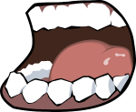

W zaburzeniach miofunkcjonalnych mamy do czynienia z następującymi problemami: występuje nieprawidłowy wzorzec ruchowy języka i warg podczas połykania. To oznacza, że język podczas każdego aktu połykania (ok 1000 – 2000 razy dziennie) przesuwa się do przodu i naciska na zęby. W ten sposób język, jako jeden z najsilniejszych kompleksów mięśni naszego ciała, może wykrzywiać zęby i/lub deformować żuchwę i szczękę; występuje niekorzystne napięcie mięśni w obszarze ust, które powoduje, że język nie znajduje swojej prawidłowej pozycji spoczynkowej, względnie nie potrafi jej utrzymać. Usta często są otwarte.
Występujące w nim objawy
otwarte usta;
oddychanie przez usta;
pogrubiona i zaczerwieniona warga dolna;
wilgotna warga dolna;
ślina w kącikach ust;
język w pozycji spoczynkowej napiera na zęby, albo leży między zębami;
zaburzenia artykulacji, często przy realizacji głosek /s/, /sz/, oraz /t, d, n, l/;
słabo wyrażona mimika twarzy;
problemy z postawą.
Możliwe następstwa nieleczonego zaburzenia miofunkcjonalnego

stałe problemy z artykulacją lub/oraz niewyraźna wymowa,
złe ustawienie szczęki, żuchwy i zębów (np. mocno wystające zęby przednie, zgryz krzyżowy, zgryz otwarty, etc.),
problemy ze stawami skroniowo – żuchwowymi;
z powodu ucisku i tarcia języka na dziąsła może powstać paradontoza.
Celem prowadzonej przy zaburzeniach miofunkcjonalnych terapii logopedycznej jest uzyskanie prawidłowej pozycji spoczynkowej języka, zamknięcie ust i nauka prawidłowego połykania. Podczas terapii prowadzone są ćwiczenia postrzegania w obszarze jamy ustnej, ćwiczenia w celu poprawy pozycji spoczynkowej języka i warg, ćwiczenia języka i warg, ćwiczenia zasysania i połykania oraz ćwiczenia całego ciała
Terapia miofunkcjonalna polega na wykonywaniu przez pacjenta odpowiednich ćwiczeń mięśni języka, warg, a nawet całego ciała. Są one prowadzone pod kontrolą terapeuty w gabinecie, a następnie także w domu, aby pacjent mógł uzyskać najlepsze rezultaty.
Czas trwania terapii jest indywidualny i uzależniony jest od stopnia zaawansowania zaburzeń u pacjenta. Niekiedy wystarczy tylko kilka miesięcy regularnych ćwiczeń, innym razem konieczne jest prowadzenie ich nawet przez ponad rok.
Warto przy tym zaznaczyć, że terapia miofunkcjonalna przeznaczona jest nie tylko dla dzieci, ale również mogą korzystać z niej osoby dorosłe, u których zostały zdiagnozowane powyżej wskazane zaburzenia. Nigdy nie jest za późno na rozpoczęcie terapii!
Elektrostymulacja wewnętrzna i zewnętrzna
Metoda ta jest dedykowana tym osobom, u których występują dysfunkcje aparatu mowy, w szczególności języka, warg i podniebienia.
Terapia ta jest skutecznym uzupełnieniem leczenia logopedycznego i ortodontycznego. Zabieg elektrostymulacji dzięki odpowiednio dobranym parametrom wspomaga kompleksowe leczenie pacjentów z zaburzeniami logopedycznymi. Polega on na przepływie prądu o bardzo niskim natężeniu przez mięśnie podniebienia miękkiego lub języka w celu usprawnienia ich funkcji.
Elektroterapia oddziałuje na cały aparat artykulacyjny człowieka, wspomagając jego działanie. Zabieg pobudza do pracy włókna mięśniowe podniebienia, wskutek czego następuje wzmocnienie siły, przyrost masy oraz objętości mięśni.
po operacji rozszczepu warg i podniebienia
opóźniony rozwój mowy
dyslalia obwodowa
mowa nosowa (rynolalia)
afazja motoryczna
dyzartria( zaburzenia artykulacji )
wysiękowe zapalenie uszu (zaburzenia pracy trąbki słuchowej)
niedosłuchy
problemy z połykaniem pokarmów
ksztuszenie podczas jedzenia i picia
po adenotomii ( usunięciu migdała gardłowego)
Do elektrostymulacji wykorzystuje się wysokospecjalistyczny sprzęt medyczny. Dla uzyskania przepływu prądu, który pobudza mięśnie stosuje się dwie elektrody; jedną z elektrod umieszcza się na łopatce, karku lub przedramieniu pacjenta, natomiast drugą elektrodą punktową dotyka się bezpośrednio stymulowane miejsce. Zabieg jest komfortowy, bo zupełnie bezbolesny. W zależności od stanu wrażliwości skórnej pacjent może odczuwać lekkie mrowienie lub może nie odnotować żadnych odczuć.
Dla uzyskania najlepszej skuteczności zaleca się 3 serie zabiegów lub mniej wg zaleceń logopedy. W każdej serii wykonuje się 10 zabiegów elektrostymulacji.
Dzięki angażowaniu włókien mięśniowych podniebienia miękkiego i języka do procesu skurczu następuje:
wzrost elastyczności tkanek poddawanych zabiegowi;